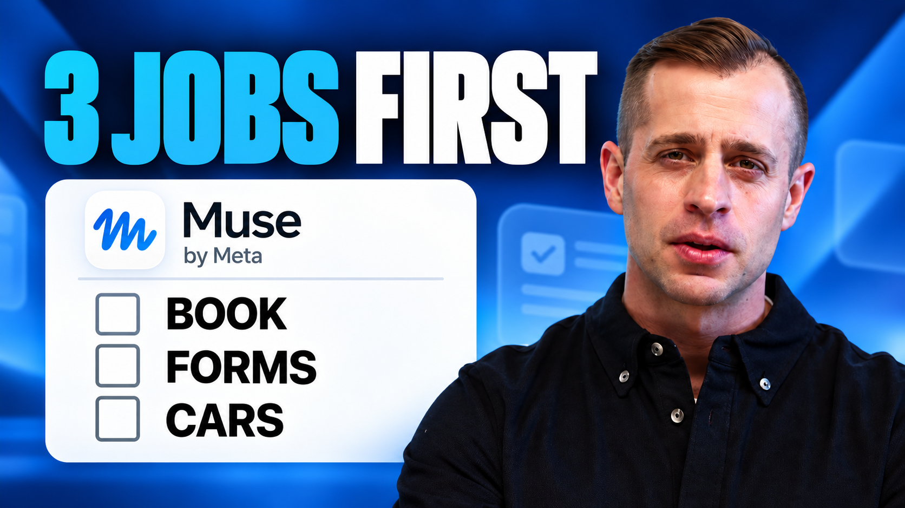

Read Ultrathink
Get the Tenex newsletter.
Subscribe to Ultrathink →An assistant that knows your taste, handles the little things, and helps you get on with your day.

▶ Watch JJ’s walkthrough ↗Try a useful task before importing memory or connecting other apps. Open Muse, start a side chat, and paste this prompt.
Help me choose something to watch tonight. Ask me three short questions about my taste, streaming services, and available time. Then recommend three options, explain why each fits, and verify where I can watch them in my country. Label any availability you cannot check. Do not rent or buy anything.
Try: “Lighter tone. Under two hours. We already watched the second one.” Ask Muse to remember the preferences you want reused.
You have three choices, a reason for each, and a checked place to watch. If availability is uncertain, Muse should say so.
Want to save this? Ask for a watchlist artifact. If you like it, use the routine prompt to refresh it weekly.
New to AI assistants? Start fresh below. Already use one? Import a reviewed summary in steps 3–4. You can do the other steps in either case.
You do not need another AI account or an existing memory file.
Help me introduce myself. Ask up to three questions at a time about my interests, preferences, regular responsibilities, and what I want help with. Let me skip any question. Turn my answers into a short memory summary for me to review. After I approve, save it to your existing memory file and show me what changed.
Work through this once. Replace anything in [brackets] before pasting into Muse.
Start at https://muse.ai/ and use the official download links. Sign in with the same account on your devices. Check current availability and plan limits in the app. Pick one workflow below; you can add more after the first result is useful.
Help me set up Muse for [one job]. Ask me up to three questions at a time. Check which features and connections my account supports before we begin. Keep the setup simple.
Before adding personal information, review Settings → Data Controls. JJ recommends turning off “Improve our AI models” if you do not want that use of your data. Labels can change; read the current explanation in your app. This preference does not mean no data is stored or processed. Keep passwords, payment details, and private family documents out of this public repository.
In your existing assistant, use the export prompt below. Read and remove anything you do not want to share. A summary is not a complete account export. Paste only the reviewed version into Muse. Prefer general preferences over detailed personal records.
Write a concise handoff for my new personal assistant using only facts you know about me. Include my preferences, recurring responsibilities, and how I like help. Flag uncertainty. Leave out passwords, account numbers, private information about other people, and anything I have not chosen to share. Give me an editable summary to review.
Ask Muse to locate its existing memory file. Names, casing, and locations can vary; do not create a second file just to match this guide. Merge useful facts rather than replacing existing memory. Then ask a question whose answer depends on your new context.
Here is my reviewed personal summary: [paste summary]. Find your existing memory file (memory.md or the equivalent in this account). Show me proposed additions and conflicts first. After I approve, merge them without deleting unrelated information, then show me what you saved and where. Do not save guesses as facts.
Use SOUL for tone and working preferences. Use memory for facts about you. Start with a few clear rules, then refine them. These instructions complement the app’s permission controls; they do not enforce permissions on their own.
Help me update your existing SOUL file. Be warm, direct, and concise. Give specific recommendations and explain why they fit. Ask one clear question when a key detail is missing. Admit uncertainty. Research and draft freely within the access I grant, but ask before sending messages, booking, buying, submitting forms, deleting, or changing calendar events. Silence is not approval. Show the proposed edits and preserve unrelated instructions.
Use Muse’s connection flow to sign in; do not paste passwords into chat. Start with the narrowest access available. Verify an actual read before relying on the connection. You can upload selected information if a connector is unavailable.
For [job], which supported connection do you need? Help me connect it with the least access necessary. Tell me what you can read or change. Then demonstrate access with one item I select. If this connection is unavailable, suggest a manual alternative.
Pick three interests and make them specific. Feed is for content you may want to explore. Activity shows what Muse did. A side chat keeps a job organized but is not a separate privacy boundary.
Help me configure my Feed around [interest 1], [interest 2], and [interest 3]. Prioritize information useful for [decision or hobby]. Avoid [topics]. Explain what you changed. I will tell you which items I like and why so we can refine it.
An artifact is a page, document, tracker, or other output you can return to. Start with the movie picker or weekend planner below. Review one result before adding a schedule. Use the routine prompt after it works.
Turn this result into a simple mobile-friendly artifact. Include sources where relevant, a last-updated time, and a clear way to see what changed. Show me where to find it again. Do not publish it publicly. Let me review it before we set up a routine.
Start with something you care about. Each recipe includes a first prompt, a useful result, and a sensible routine.
Nothing to upload: movies, food, or weekends. Bring a few details: wardrobe, birthdays, health habits, shopping, or travel. Use a selected document or connection: calendar and school forms.
Choose an outfit from clothes you actually own.
Bring: Photos of a few items, occasion, general location, comfort and style preferences.
Help me build a small wardrobe catalog from these photos. Label each item and ask if something is unclear. Then suggest two outfits for [occasion] using only confirmed items I own. Check the forecast for [location and date] if available. Create a visual outfit page with item photos and a short reason for each choice. Label any generated try-on image as a visualization, not a real fit preview.
Two wearable outfits with identifiable items and a weather note.
Refresh for the days I choose, or only before a planned event.
Use the routine prompt →Try a correction: “That shirt is unavailable. Prefer comfortable shoes and reuse the catalog.”
Upload only photos you want stored. Muse cannot know what is clean or fits unless you tell it.
Find something you will actually want to watch.
Bring: Three titles you loved, two you disliked, streaming services, country, and available time.
Learn my movie and TV taste from [liked titles] and [disliked titles]. I have [services] in [country]. Create a watchlist artifact with five picks available now. Explain the fit, runtime, where to watch, any extra rental cost, and a source checked today. Include a simple feedback section for liked, disliked, and already watched. If interactive ratings cannot be saved, let me give feedback in this chat. Do not rent or buy anything.
A short watchlist you can rate, with checked availability.
Refresh weekly in a dedicated side chat; highlight new picks.
Use the routine prompt →Try a correction: “Less dark, more funny. We watched the first one already.”
Streaming catalogs vary by country. Availability needs a fresh check. See JJ’s movie demo in the video guide.
Solve “what should we eat?” with choices that fit.
Bring: Budget, general area, favorite cuisines, dietary restrictions, and whether you want to cook or go out.
Find three dinner options for [date]: [cook at home / eat out]. My budget is [amount] for [people], and my preferences are [preferences]. For cooking, use these ingredients: [list]. For restaurants, check current hours, menu, prices, and reservation availability near [area]. Create a short menu or restaurant shortlist with sources. Flag anything you cannot verify. Do not book or order yet.
Three practical options with cost and next steps.
Suggest a weekly meal plan or a shortlist before a regular date night.
Use the routine prompt →Try a correction: “No repeats from last week. Keep preparation under 30 minutes.”
For allergies, verify directly with the restaurant or product label. An AI recommendation is not an allergy guarantee.
Keep track of a habit you chose.
Bring: A modest activity goal, preferred check-in time, and the information you want to log.
Create a simple tracker for my goal: [walk / exercise / sleep routine / another habit]. Record only entries I provide or data from a connection I explicitly approve. Show completed days and a weekly summary. Ask which reminder cadence I want. Keep the tone encouraging and factual; do not invent readings, diagnose conditions, or change medical advice.
A clear habit log with a weekly progress view.
Try a correction: “Skip daily encouragement. Show my weekly total instead.”
Start with manual entries. Do not assume Apple Health, a watch, or another health connector is available. This is habit logging, not medical care.
Catch conflicts and preparation needs early.
Bring: One selected calendar, timezone, travel buffers, and what deserves an alert.
Review my selected calendar for the next seven days. Flag overlapping events, unrealistic travel gaps, and events that need preparation. Show the event times and timezone and explain each flag. Create a simple upcoming-events artifact. Do not edit, cancel, invite, or message anyone. If a calendar is not connected, ask for a selected export or pasted events.
A short list of conflicts and things to prepare.
Check once daily; notify only about new actionable changes.
Use the routine prompt →Try a correction: “Ignore tentative holds. Add a 30-minute travel buffer for in-person events.”
Confirm the calendar is accessible from the cloud before relying on unattended checks.
Remember the people you choose and find thoughtful gifts.
Bring: A small approved list of people, dates, interests, budget, and delivery region.
Build a birthday tracker for this list: [people and dates]. Ask about missing dates instead of guessing. For each person, record only the interests and gift budget I provide. Suggest three gifts with checked price, delivery estimate, and source. Remind me 14 days and 3 days before each birthday in [timezone]. Confirm the reminder schedule before enabling it. Do not buy gifts or send messages.
Upcoming birthdays with useful gift options and enough lead time.
Try a correction: “Only remind me about people on this list, not every social connection.”
Do not assume Facebook exposes every birthday or that a person’s interests can be inferred correctly.
Find something worth leaving the house for.
Bring: General area, interests, travel radius, budget, and who is joining.
Build a visual plan for this coming weekend near [area], within [distance] and [budget]. Suggest three activities matching [interests and group]. Verify dates, hours, prices, and booking links. Include a rainy-day alternative. Show why each fits and label missing information. Do not book anything. Keep it to one easy-to-scan artifact.
Three realistic outings and a backup plan.
Try a correction: “More outdoors, less driving. Avoid anything we did last month.”
This is an easy first recurring artifact. Confirm event details again before leaving.
Watch for a specific item without checking every day.
Bring: Must-have criteria, budget, search region, and approved sources.
Find [item] meeting these strict criteria: [requirements], under [budget], near [region]. For a car, include model year, mileage, drivetrain, listed price, and seller. Verify each listing at its source and include the link and checked time. Exclude listings missing a required fact. Build a shortlist artifact. If nothing qualifies, say so. Do not contact sellers, reserve, or buy.
A verified shortlist with no near-miss padding.
Check daily and alert once per new qualifying listing or meaningful price drop.
Use the routine prompt →Try a correction: “AWD only. Exclude listings without stated mileage.”
An inaccessible site is not an empty market. Ask Muse to report gaps rather than invent results.
Prepare the paperwork without retyping everything.
Bring: A blank form and only the information needed to complete it.
Read this form and list the required fields. Fill a draft using only the information I provide here: [details]. Leave unknown fields blank and list questions separately. Return an editable copy if supported and a summary of what you filled. Do not sign, submit, consent, or guess medical or emergency details. I will review the final document.
A draft form with missing information clearly identified.
Optional weekly review of a selected school folder or inbox label for new forms and deadlines.
Use the routine prompt →Try a correction: “Leave that blank. I will confirm it before signing.”
Review every field and the rendered form. Keep children’s information out of shared demos and public repositories.
Get ready for a trip using the plans you already have.
Bring: A redacted itinerary, dates, destination, activities, and baggage limits.
Turn this itinerary into a trip-prep artifact. List key dates, transport details from the source, a weather-aware packing list, and unresolved questions. Label live information with sources and checked times. Do not infer reservations that are not in the itinerary. Ask before changing bookings or contacting anyone.
A packing checklist and trip overview you can open on your phone.
Refresh two days before departure and send one preparation reminder.
Use the routine prompt →Try a correction: “Carry-on only. Remove anything already packed.”
Check entry requirements with official sources yourself. Do not put passport numbers into reusable templates.
Review the first result before scheduling it. A chat reply saying “done” is not enough: check the saved routine, next run, and Activity.
Turn this approved workflow into a recurring task. First confirm the cadence, timezone, delivery destination, and what counts as a meaningful change. Use [schedule] in [timezone]. Keep it in this dedicated side chat if supported. Prefer cloud-accessible sources; tell me if it needs my computer awake. Update the same artifact if supported, otherwise make a dated replacement. Show the last successful run and keep earlier verified results if a source fails, clearly labeled as old. Deduplicate alerts and stay quiet when nothing meaningful changes, except report failures that prevent the job. Check for an existing routine before creating a duplicate. Show me the configuration, ask me to confirm it, then run one test. Show me how to pause or delete it.
Test cloud-only routines with your laptop closed. To stop one, ask Muse to pause the named task and show its disabled status. Remove unused connections separately.
24-minute walkthrough. Jump to the part you need:
An 18-second look at JJ’s recurring movie artifact. Try the movie picker prompt.
Videos load from X when played. If playback is blocked, use the original link. Features and pricing in the recording may have changed.
Ask it to show the saved entry, correct the specific fact, then test again.
Check it exists, its next run and timezone, the Activity log, source access, usage limits, and whether your computer was required.
Ask for one alert per new result, a slower cadence, and silence when nothing changes.
Ask for its last successful update and source-check times. Open the newest version if the original cannot be updated.
Give one precise correction and ask whether it should apply to this task or saved preferences.
Use a pasted selection, export, or another approved source. Ask it to label the missing coverage.
Ask it to pause the named routine, show its disabled status and next-run state, then verify in the app. Revoke unused connections separately.
Run this after a few uses, or when a result stops matching your preferences. A precise correction usually helps more than another long prompt.
Review our setup for this job. Show the preferences you are using, the connected sources you can actually access, the latest artifact, and any active routine with its next run and timezone. Flag stale facts, conflicting instructions, duplicate routines, and missing access. Suggest the smallest useful fixes. Do not change settings or create tasks until I choose the fixes.
Try voice input on your phone. Or build a physical desk companion with JJ’s optional gadget guide. Hardware is a separate hobby project; you do not need it for any workflow here.
Keep your completed memory, family information, and account details private. This guide contains examples only. Review actual app permissions alongside your prompts.
Get the Tenex newsletter.
Subscribe to Ultrathink →Follow our videos and walkthroughs on YouTube.
Subscribe on YouTube →Talk to Tenex about AI consulting, strategy, and transformation.
Get started with Tenex →